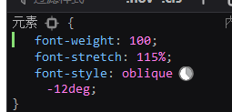
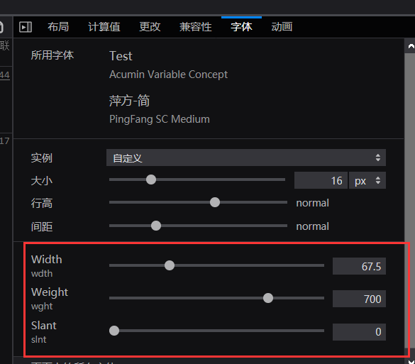

关于字体AcuminVariableConcept
tags : tag 知识处理工具 tag 技术
最近在开发时发现设计师使用了一款字体AcuminVariableConcept.otf，一开始同事说这个字体包有几十种字体，不知道如何使用。我也找了许久确实没有办法应用不同字体，后来在Firefox中实践的时候发现他并不是包含许多字体，而是有很多宽度与拉伸的组合情况
红框中这个面板一般字体是没有的
在Firefox中调整实例这个值发现生成了内联样式如下

本来以为这样就ok了，可以完成设计稿上的效果了。但chrome不支持....

chrome 不支持 字体拉伸:
https://stackoverflow.com/questions/18752793/why-is-font-stretchcondensed-an-invalid-property-value-in-google-chrome
AcuminVariableConcept.otf